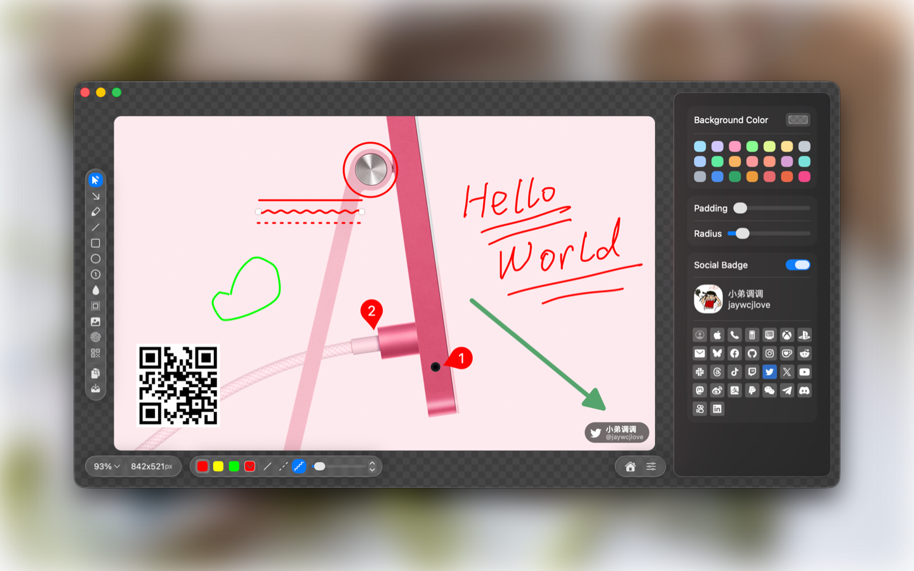
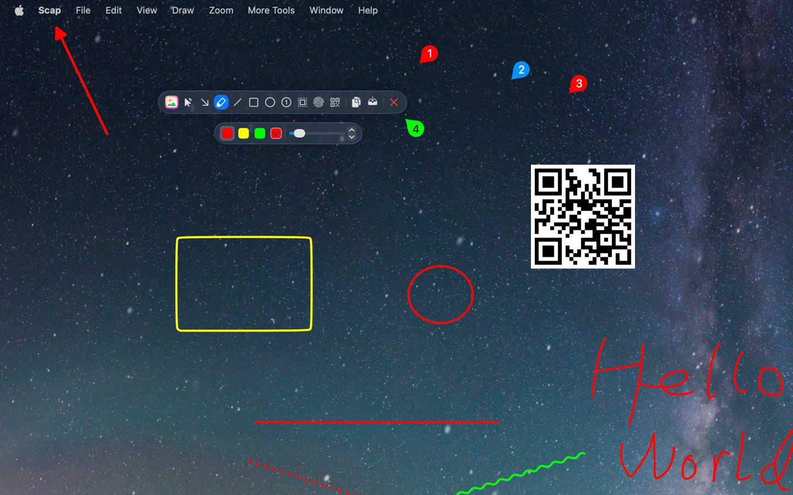
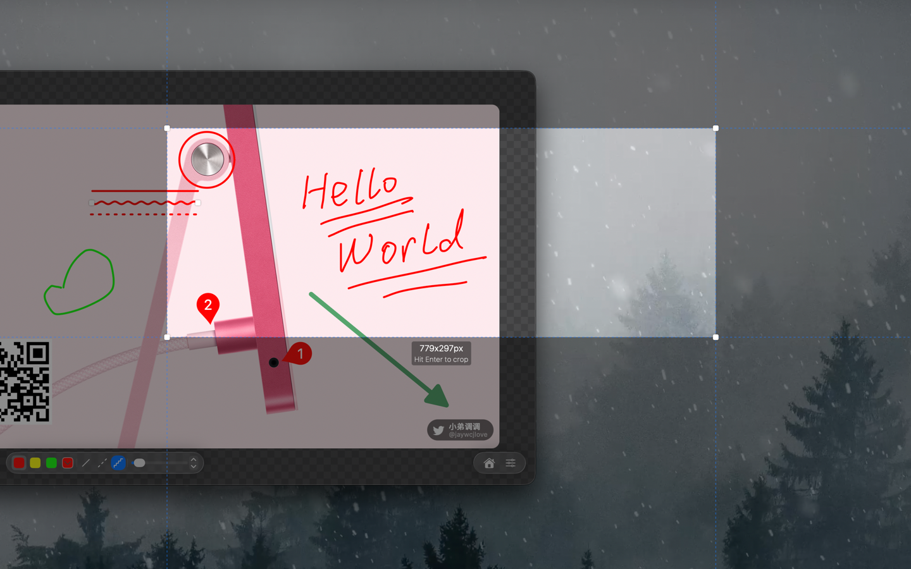

Scap 是一款专为 macOS 用户设计的图像截图、标注与画板应用。它提供一个专注的编辑画布，集成了多种强大功能，包括绘图工具、模糊/马赛克、聚光灯、二维码叠加、水印以及图片图层粘贴等。除了强大的编辑功能外，Scap 还支持编辑现有图像、自由创作的画板模式以及精准的屏幕截图模式，帮助用户高效完成图像处理任务。
编辑 (Edit)：标注指定图像。画板 (DrawingBoard)：自由绘图画布。屏幕截图 (ScreenCrop)：选取并捕获屏幕区域。V：裁剪 / 选择A：箭头D：自由画笔L：直线R：矩形O：椭圆C：计数标记B：模糊 / 马赛克S：聚光灯W：水印Q：二维码⌘V：粘贴图片